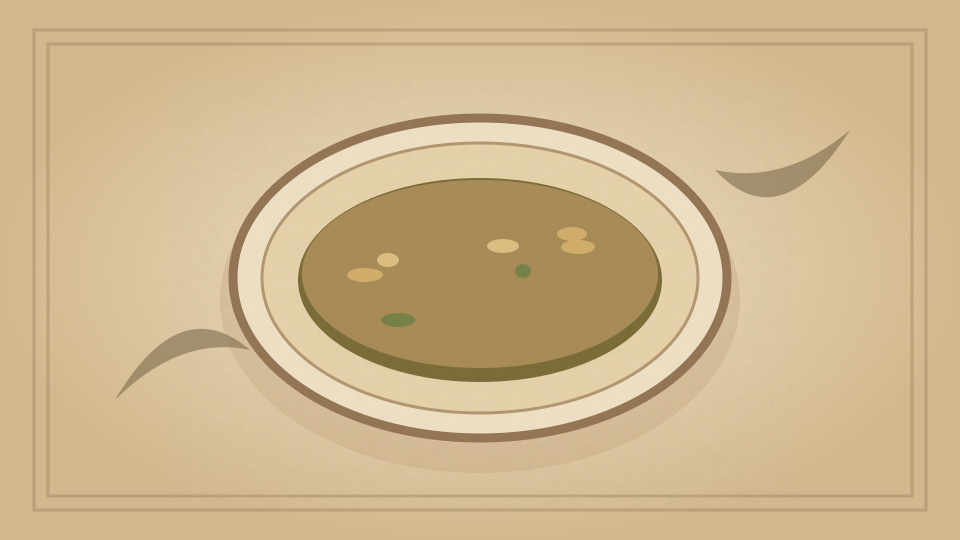

1910 · Fannie Merritt Farmer · SOUPS
Cream of Scallop Soup
The Boston Cooking-School Cook Book

Historical Recipe
The following text is extracted from the 1910 edition, retaining historical terminology and quantities.
Original Ingredients & Directions
1 quart scallops
4 cups milk
2 cloves
Bit of bay leaf
¼ teaspoon peppercorns
1 tablespoon chopped onion
5 tablespoons butter
¼ cup flour
Salt
Pepper
Clean scallops, reserve one-half cup and finely chop remainder. Add these to milk, with seasonings and two tablespoons butter, and cook slowly twenty minutes. Strain and thicken with remaining butter and flour cooked together. Parboil reserved scallops, and add to soup. Serve with small biscuits or oysterettes.
Automatically extracted transcription; editorial verification pending. Historical instructions may not meet modern food-safety standards.